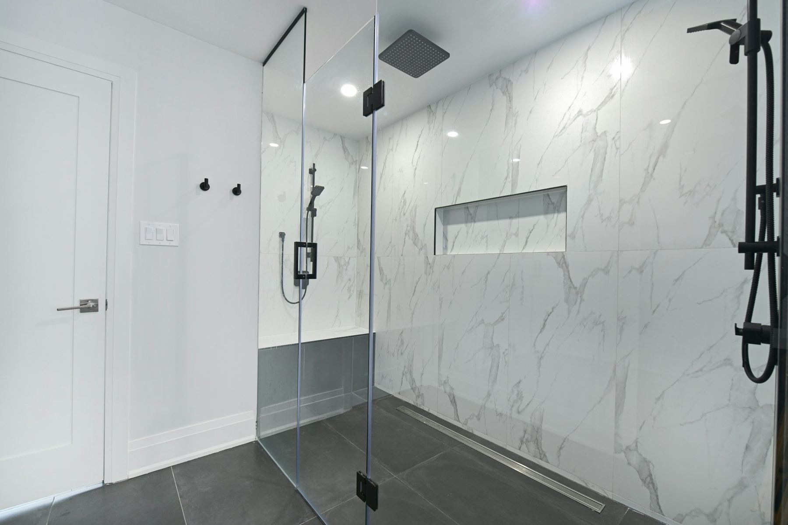
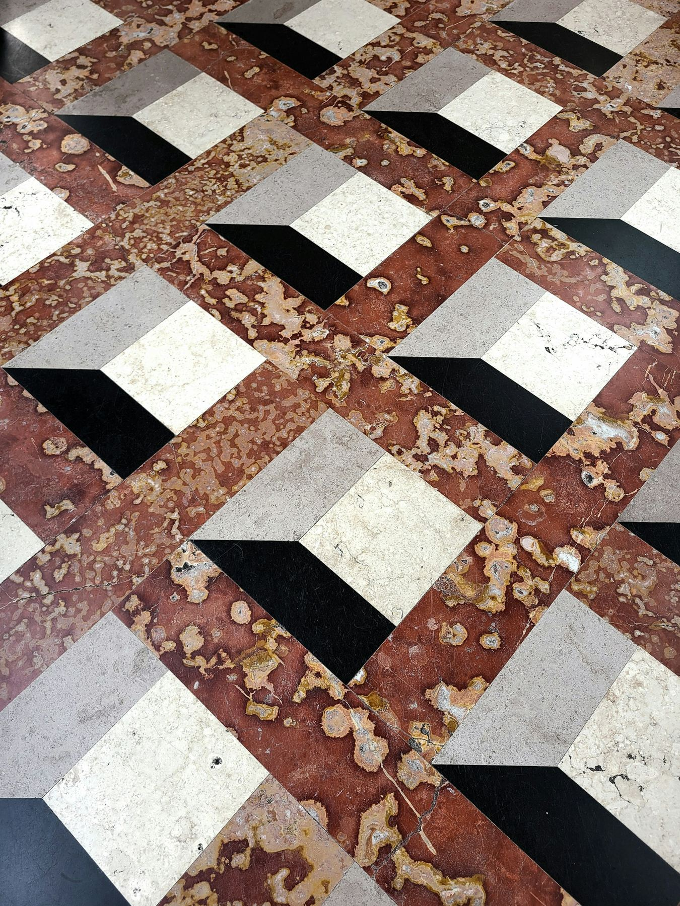
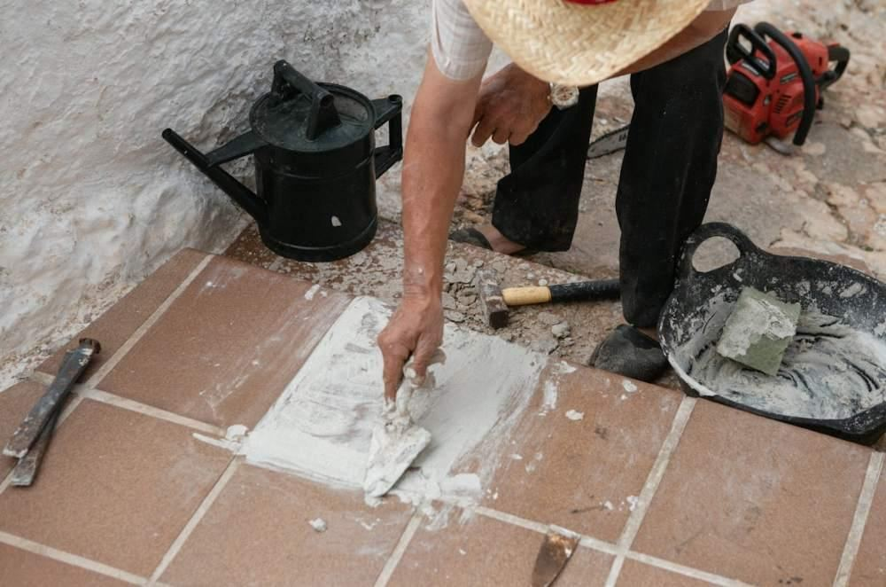
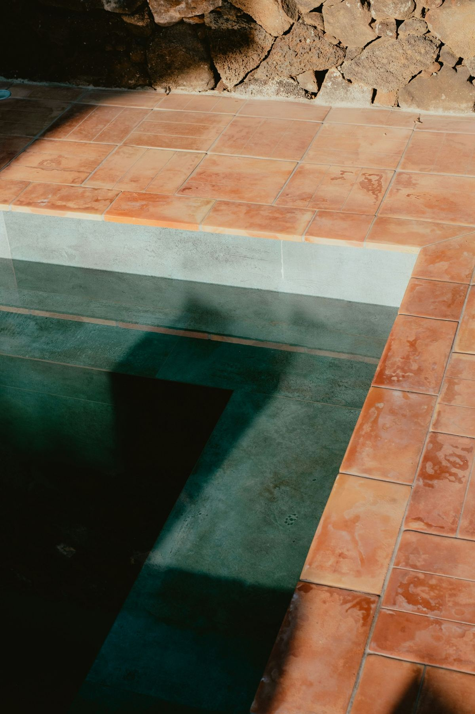

Exemple fictif
Une douche à l'italienne en grand format
Dépose de l'ancienne cabine, receveur extra-plat, grands carreaux effet marbre et niche intégrée.

Carreleur à Tanneron · depuis 2003
Sols, murs, faïence, mosaïque et douches à l'italienne. Un artisan du massif du Tanneron pour vos rénovations, dans le Var et les Alpes-Maritimes.
Savoir-faire
Du sol de terrasse à la salle de bains complète, un seul artisan, du conseil jusqu'au dernier joint.

Sols intérieurs, terrasses et allées : carrelage, dallage et pavé, posés de niveau et durables.

Rénovation complète de salle de bains et de salle d'eau, jusqu'à la douche à l'italienne.

Murs, crédences, niches et habillages : la faïence et la mosaïque, posées au millimètre.

Des matériaux nobles, choisis avec vous, posés et traités pour durer.

Sol, crédence et plan : la rénovation de votre cuisine, côté carrelage.

Pour une rénovation complète : cloisons, plafonds, plâtrerie et petite maçonnerie.
La précision
Calepinage, coupes, joints : c'est dans les détails que l'on reconnaît une belle pose.
Avis clients
Recopiés mot pour mot depuis Pages Jaunes. Vos avis Google pourront s'afficher ici aussi.
« Nous sommes extrêmement satisfaits du travail de Monsieur Coco. Fiable, il a tout fait pour nous arranger sur les délais, le carrelage est très bien posé, la salle de bain entièrement carrelée est magnifique. Nous recommandons ses services les yeux fermés. Merci pour tout »
« Carreleur très réactif, travaux exécutés la semaine qui suit la commande et avec une parfaite qualité : excellent professionnel qui tient parfaitement ses engagements. Je recommande. »
« Apres 2 carreleurs insatisfaisants enfin quelqu'un de compétent Je le recommande vivement; le résultat du carrelage dans notre salon cuisine, WC et salle d'eau est impeccable. »
Réalisations
Dépose de l'ancienne cabine, receveur extra-plat, grands carreaux effet marbre et niche intégrée.

Exemple fictifCarreaux de terre cuite posés autour du bassin, joints fins et traitement anti-taches.
 Exemple fictif
Exemple fictifMosaïque de verre aux tons d'eau, posée sur un mur courbe.

Zone d'intervention
Var et Alpes-Maritimes, depuis le massif du Tanneron.
TanneronMandelieu-la-NapoulePégomasAuribeau-sur-SiagneMontaurouxCallianFayenceSaint-CézaireGrasseMouginsCannesLe CannetSaint-RaphaëlFréjus